Практичний досвід · журнал «ДентАрт» 2022 №4
Нехірургічне повторне лікування невдалої апікоектомії з використанням гідравлічного цементу як апікального бар'єру
Non-surgical re-treatment of failed apicoectomy using hydraulic cement as an apical barrier
Зуби після проведеної раніше резекції верхівки кореня та з персистуючим апікальним періодонтитом, як правило, лікують повторно хірургічним шляхом або застосовують комбінацію нехірургічного та хірургічного повторного лікування. Однак іноді пацієнти не бажають повторного хірургічного втручання.
Альтернативою може бути нехірургічне ортоградне лікування невдалої апікоектомії з використанням техніки апікального бар’єру, що використовується для апікального закриття невітальних зубів з резорбцією апікальної зони або несформованих невітальних зубів. Мінерал триоксид агрегат (MTA) став матеріалом вибору в таких випадках через його чудову біосумісність, здатність до герметизації та остеоіндуктивні властивості. Цей клінічний випадок демонструє нехірургічне повторне лікування невдалої апікоектомії центрального різця верхньої щелепи ортоградним шляхом. MTA використовувався для індукції апікального закриття широкої апікальної ділянки після резекції.
Вступ
Із середини 1960-х років апексифікація гідроксидом кальцію була методом вибору для несформованих зубів з некротизованою пульпою та відкритою верхівкою.1 Однак ця методика має певні недоліки: тривалий час лікування, необхідність багаторазових візитів до лікаря, проблеми з дотриманням пацієнтом режиму, занепокоєння щодо коронального підтікання та підвищений ризик переломів кореня.2,3 Щоб подолати недоліки техніки апексифікації, була запропонована техніка апікального бар’єру, або так звана «апексифікація за одне відвідування».4,5 Гідравлічний цемент мінерал триоксид агрегат (MTA) наразі вважається матеріалом вибору для апікального закриття завдяки його чудовій біосумісності, герметизуючій здатності та остеоіндуктивним властивостям.6,7
Техніка апікального бар’єру з використанням МТА або біокераміки доволі популярна в наш час. Результати клінічних проспективних досліджень свідчать, що це надійний і ефективний метод лікування незрілих зубів з некротичною пульпою зі сприятливими результатами.8 Крім несформованих зубів з некротичною пульпою, існують випадки, коли в зубах із повним формуванням коренів виникає потреба в лікуванні за допомогою техніки апексифікації, оскільки апікальна констрикція відсутня. Це може бути наслідком апікальної резорбції, перфорації, надлишкової та неконтрольованої інструментальної обробки або невдалої апікоектомії без встановлення ретропломби. У минулому зуби з невдалою апікоектомією (резекцією верхівки) без повторного пломбування лікували хірургічним шляхом або застосовували комбінацію нехірургічних і хірургічних процедур. Але сьогодні існує більш передбачувана техніка ендодонтичної мікрохірургії з використанням збільшення.
Різниця між традиційними та мікрохірургічними методами в ендодонтичній хірургії
При виконанні маніпуляцій в ендодонтичній хірургії лікар має приблизно визначити розташування анатомічних структур, таких як великі кровоносні судини, верхньощелепна пазуха і ментальний отвір. Незважаючи на те, що ймовірність пошкодження цих утворень мінімальна, традиційна ендодонтична хірургія не популярна через її інвазивний характер і сумнівний результат.9,10 Важливо зрозуміти, що успіх ендодонтичної хірургії залежить від видалення всіх некротичних тканин і герметизації системи кореневих каналів. Зважаючи на це, причини невдачі хірургічного втручання при традиційному підході стають зрозумілими. Дослідження невдалих клінічних випадків і видалених зубів за допомогою хірургічних операційних мікроскопів свідчать, що хірург не може передбачувано знайти, очистити та заповнити всі складні апікальні розгалуження традиційними хірургічними методами. Ці обмеження можна подолати лише за допомогою мікроскопа зі збільшенням та освітленням і специфікою мікрохірургічних інструментів, особливо ультразвукових.
Ендодонтична мікрохірургія поєднує збільшення та освітлення, що забезпечуються операційним мікроскопом із відповідними мікроінструментами.9-11 Ендодонтичну мікрохірургію можна виконувати з точністю та передбачуваністю без ризиків, властивих традиційним хірургічним підходам. До основних переваг мікрохірургії можна віднести легшу ідентифікацію верхівок кореня, менші остеотомічні отвори та менші кути резекції, які зберігають кортикальну кістку і довжину кореня. Крім того, резецована поверхня кореня під великим збільшенням і освітленням легко виявляє анатомічні деталі, такі як перешийки, розгалуження і бічні канали. Поєднання мікроскопа та ультразвукових інструментів дозволяє робити консервативне, коаксіальне препарування верхівок коренів, а також точне ретроградне пломбування кореневих каналів.9,11
Загоєння періапікальних уражень за допомогою нехірургічних ендодонтичних процедур
Успіх ендодонтичної терапії коливається від 53 до 98 % при першому виконанні,12-14 тоді як у випадках повторного лікування з періапікальним ураженням він нижчий.15,16 Гістологічний статус періапікального ураження, показаного на рентгенограмі як прозоре ураження, невідомий клініцистам на момент лікування. Ураження може бути гранульомою або кістою. Загальноприйнятим фактом є те, що гранульома заживає після ендодонтичної терапії. Однак серед стоматологів точиться давня дискусія щодо того, чи заживають періапікальні кісти після ендодонтичної терапії.17,18 Ендодонтисти вважають, що кістозні утворення загоюються після повної ендодонтичної терапії. Оральні хірурги дотримуються протилежної точки зору, що такі ураження не загоюються і їх потрібно видаляти хірургічним шляхом. Істина насправді може бути десь посередині.
Ретельні серійні зрізи періапікальних уражень людини, проведені Наіром,19 показали, що загалом 52 % уражень були епітелізовані, але тільки 15 % були насправді періапікальними кістами.20,21 Періапікальні кісти можна диференціювати на справжні кісти, які мають повністю закритий просвіт, і кишенькові кісти, які відкриті до кореневого каналу.19,21 Переважає думка, що кишенькові кісти заживають після ендодонтичної терапії,19,22,23 але справжні періапікальні кісти можуть не заживати після нехірургічної ендодонтичної терапії.17,18,21 Лише подальше хірургічне втручання приведе до загоєння такого ураження.
Таким чином, з точки зору суто патології, приблизно 10 % усіх періапікальних уражень потребують хірургічного втручання на додаток до ендодонтичного лікування. Крім того, наслідки невдалого повторного лікування через транспортування апексу або процедурні помилки, які часто є результатом використання машинних NiTi файлів, у багатьох випадках найкраще лікуються за допомогою хірургічної ендодонтії, особливо якщо вони мають постреставрації. Крім того, складність анатомії каналу не дозволяє досягти 100 % успіху нехірургічної ендодонтичної терапії, навіть якщо кісти є кишеньковими.
З появою мікрохірургії підхід до лікування періапікальних уражень змінюється. У випадках невітальних зубів із несформованою верхівкою кореня, в зубах із повним формуванням коренів з наявністю запальної апікальної резорбції, перфорації або невдалої традиційної апікоектомії може бути проведене передбачуване нехірургічне повторне ендодонтичне лікування з використанням методу апікального бар’єру MTA. Це було продемонстровано у випадку невдалої апікоектомії центральних різців нижньої щелепи, які були повторно переліковані без хірургічного втручання з 2-річним сприятливим повторним оглядом.24 Подібним чином бічний різець нижньої щелепи з апікоектомією та великим перирадикулярним ураженням був повторно пролікований із застосуванням пробки MTA, і 30-місячне спостереження виявило нормальні періапікальні тканини в результаті лікування.25 Також були продемонстровані позитивні результати нехірургічного повторного лікування зубів із невдалими операціями та пломбуванням верхівки кореня амальгамою після ортоградного переліковування та використання апікальної пробки MTA.26
Властивості гідравлічних цементів в ендодонтії
Біокераміка – це біосумісні керамічні сполуки, отримані як in situ, так і in vivo різними хімічними процесами. Біокераміка демонструє чудові властивості біосумісності завдяки своїй схожості з біологічним гідроксиапатитом. Під час процесу гідратації біокераміка виробляє різні сполуки, наприклад гідроксиапатити, здатні викликати регенеративну реакцію в організмі людини. При контакті з кісткою мінерал гідроксиапатит має остеокондуктивний ефект, що веде до утворення кістки на межі.27
Першим біокерамічним матеріалом, успішно використаним в ендодонтії, був цемент MTA (Mineral Trioxide Aggregate), розроблений на основі портландцементу в Університеті Лома Лінда (Каліфорнія) на початку 1990-х років. Він був розроблений як ретроградний пломбувальний матеріал, а також для закриття перфорацій. Портландцемент і МТА мають схожий склад, фізико-хімічні властивості. Портландцемент, що використовується в будівельній промисловості, містить трикальцієвий силікат (3CaO·SiO2), двокальцієвий силікат (2CaO·SiO2), трикальцієвий алюмінат (3CaO·Al2O3) і сульфат кальцію (2CaSO4·H2O). Крім того, MTA містить оксид вісмуту, нерозчинну речовину, додану до MTA для надання рентгеноконтрастності.28,29
Одним із найбільш значущих досягнень ендодонтії за останні десятиліття стало використання операційного мікроскопа для ортоградної та хірургічної ендодонтії.
Цемент MTA – це кальцієво-силікатний цемент, що складається з трикальцієвого силікату, двокальційового силікату та трикальцієвого алюмінату. Рентгеноконтрастною сполукою є оксид вісмуту.30 Реакція затвердіння MTA відбувається шляхом гідратації, з отриманням гідратованого силікату кальцію та гідроксиду кальцію, який виділяється з часом. Біологічна інтеграція MTA відбувається за рахунок іонів Са, які утворюють гідроксиапатит у контакті з іонами фосфату, присутніми в організмі.31
Антибактеріальна роль цементу MTA, очевидно, пов’язана з виділенням гідроксиду кальцію, що пояснює подібну дію з пастами гідроксиду кальцію. Крім того, він демонструє сильний лужний рН з антибактеріальним ефектом.30-32
Так звана біокерамічна паста – ще один кальцієво-силікатний матеріал, високорентгеноконтрастний, не дає усадки, гідрофільний, утворює при дозріванні гідроксиапатит. Реакція схоплювання також є реакцією гідратації. Він містить монокальцій фосфат, який відповідає за утворення гідроксиапатиту in situ, містить оксид цирконію та оксид танталу як рентгеноконтрастні наповнювачі.32,33
Нижче описано клінічний випадок, який підтверджує ефективність використання апікальної бар’єрної техніки MTA для нехірургічного лікування невдалої апікоектомії зуба.
Клінічний випадок
27-річний чоловік звернувся до нашого кабінету з метою усунення сколу лівого центрального різця верхньої щелепи. Стан після ендодонтичного втручання та апікоектомії, що була проведена 4 роки тому. Періодично виникають неприємні відчуття в цій ділянці. Внутрішньоротовий огляд виявив зуб 21 з кількома старими негерметичними композитними пломбами та сколом ріжучого краю зуба. На яснах у проєкції верхівки кореня – горизонтальний рубець. На рентгенограмі в періапікальній ділянці зона деструкції кісткової тканини. Перкусія зуба 21 безболісна, періозондування в межах норми. На конусно-променевій комп’ютерній томографії також виявлено деструкцію кісткової тканини в періапікальній ділянці зуба 21, косий зріз верхівки кореня під кутом 45 градусів, вестибулярну сходинку в середній третині каналу через втрату вісі кореневого каналу.
Планом лікування була заміна старої композитної пломби та вирішення ендодонтичної проблеми ортоградним або хірургічним шляхом. Пацієнт рішуче відкинув ідею другого хірургічного втручання, тому було обрано повторне нехірургічне лікування з використанням апікальної пробки MTA.
Під час першого відвідування після очищення поверхні зуба профілактичною пастою та локальної анестезії розчином Артінібса з епінефрином 1:100.000 (Inibsa, Іспанія) зуб 21 був ізольований щільною хусткою рабердаму Dental Dam (Sanctuary) та рідким рабердамом Peroxidam (Latus). Первинний доступ виявив у порожнині зуба та кореневому каналі негерметичний цементоподібний матеріал білого кольору, що легко видалявся ультразвуковими насадками. У корональній частині після попереднього втручання залишилися піднутрення із органічним вмістом. На вестибулярній поверхні кореня зуба виявлені сходинка та перфорація стінки. Верхівка кореневого каналу відкрита і мала овальний ірегулярний профіль через косий зріз при попередньому хірургічному втручанні.
Багаторазова іригація 5,25 % розчином гіпохлориту натрію з ультразвуковою активацією. Задля нейтралізації кислої pH запалення в періапікальній ділянці у канал внесено пасту гідроксиду кальцію на 2 тижні. У зоні доступу залишено тефлон і тимчасову композитну пломбу.
Під час наступного візиту в зубі 21 не було відзначено ні суб’єктивної, ні об’єктивної симптоматики. Після очищення поверхні зуба профілактичною пастою та локальної анестезії розчином Артінібса з епінефрином 1:100.000 (Inibsa, Іспанія) зуб був ізольований щільною хусткою рабердаму Dental Dam (Sanctuary) та рідким рабердамом Peroxidam (Latus). Після видалення тимчасової композитної пломби і тефлону паста гідроксиду кальцію видалялася багаторазовою іригацією 5,25 % розчином гіпохлориту натрію з ультразвуковою активацією. Протокол фінальної іригації складався з почергової іригації 17 % розчином ЕДТА (експозиція 2 хв без активації) та багаторазової іригації 5,25 % розчином гіпохлориту натрію з ультразвуковою активацією.
Після аспірації та висушування кореневого каналу паперовими пінами в канал за допомогою спеціального шприца MAP System (PD, Швейцарія) було порційно внесено замішаний гідравлічний цемент BіоМТА (Cerkamed) на всю довжину із залученням зони перфорації. Зроблено рентгендіагностику, вкладено вологий поролоновий спонж, тефлон і встановлено тимчасову пломбу. У наступний візит (через 5 днів) зуб відновлено композитним матеріалом (лікар Ксенія Лазарєва).
Динамічне спостереження через півтора року за відсутності суб’єктивної симптоматики виявило повне загоєння періапікальної деструкції як на періапікальному рентгенографічному знімку, так і на комп’ютерній томографії.
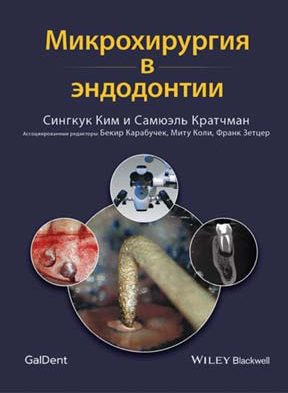
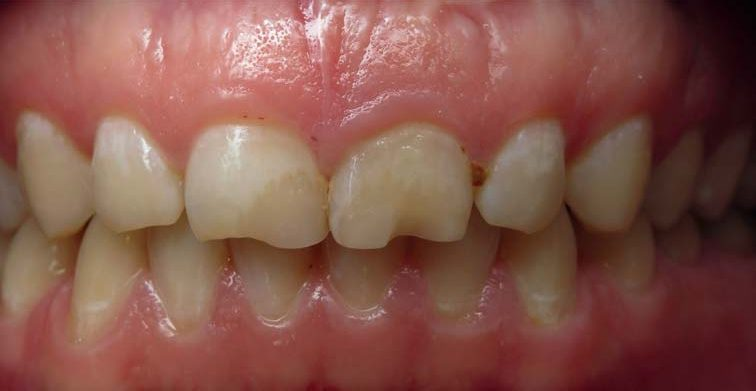
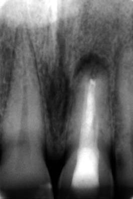
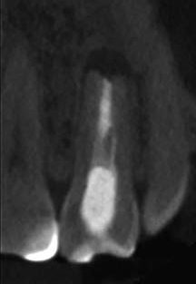
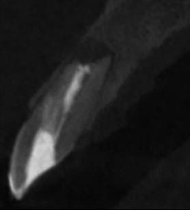
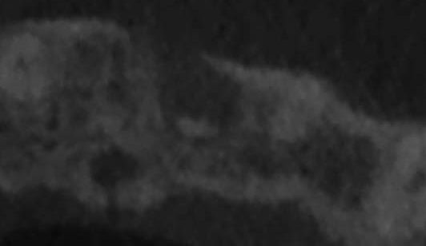
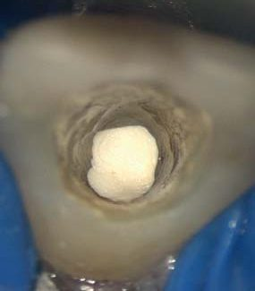
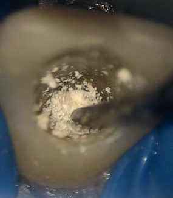
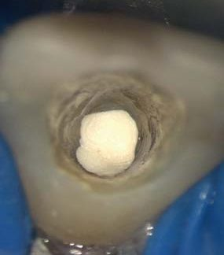
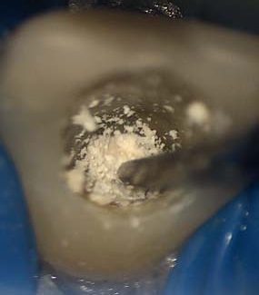
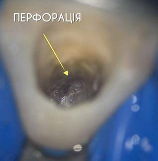
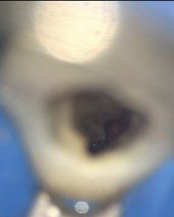
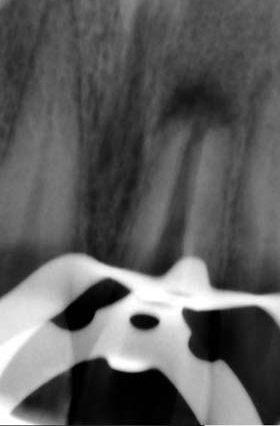
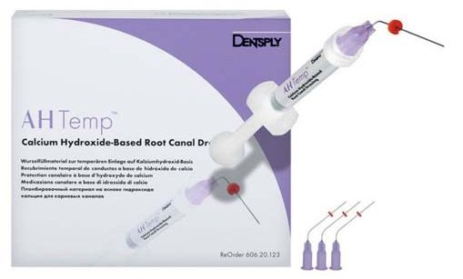
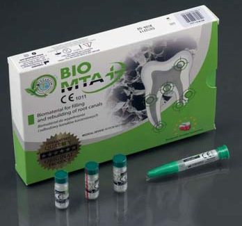
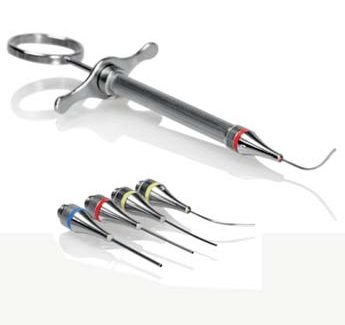
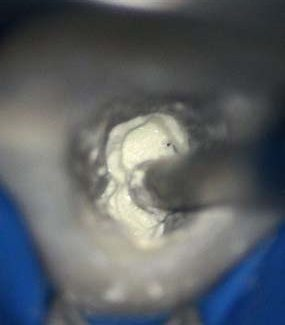
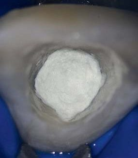
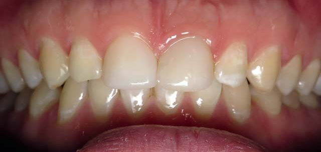
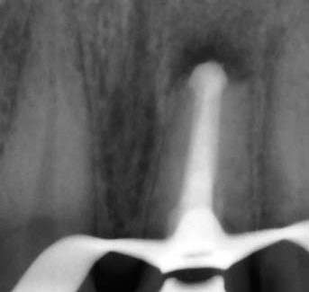
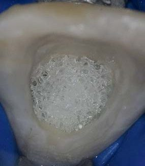
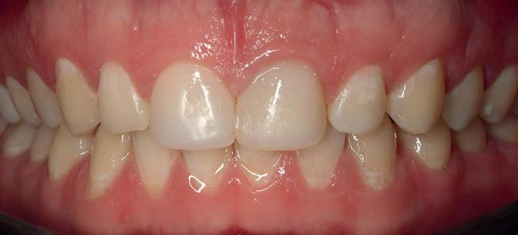
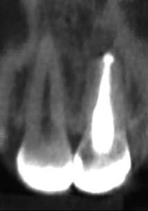
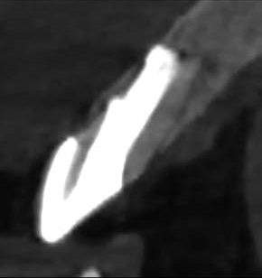
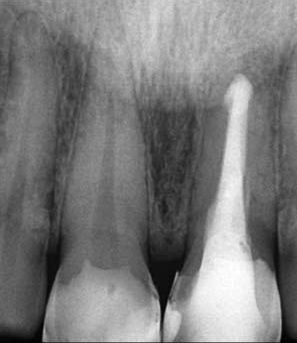
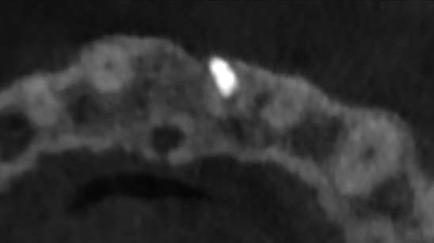
Обговорення
У зубах після апікоектомії та з наявністю персистуючого апікального періодонтиту є можливість проведення повторної операції, що відповідає сучасним принципам ендодонтичної мікрохірургії, або може бути застосована комбінація нехірургічного та хірургічного повторного лікування. Однак пацієнти часто не бажають піддаватися повторній хірургічній процедурі, незважаючи на те, що сучасна мікрохірургія значно підвищила показники успіху. Єдиним альтернативним способом лікування є спроба нехірургічного повторного лікування з використанням техніки апексифікації для вирішення проблеми відкритої верхівки апікальної зони таких зубів. Техніка апікального бар’єру з довгостроковими сприятливими результатами при невдалих випадках апікоектомії є великою перевагою як для пацієнта, так і для лікаря.
MTA є матеріалом вибору для техніки апікального бар’єру, і в цьому випадку BioMTA був використаний для закриття апексу центрального різця верхньої щелепи. Скошування кінчика кореня під час резекції верхівки робить визначення робочої довжини надзвичайно складним завданням. Хоча використовувалися як рентгенографічні, так і електронні методи, результати можуть бути незадовільними. При цьому робочу довжину можна розраховувати, увівши паперовий штифт у кореневий канал від контрольної точки до контакту з періапікальними тканинами. Точна оцінка робочої довжини має важливе значення для правильного розміщення MTA та пакування в апікальній частині кореня.
Щоб уникнути екструзії МТА в періапікальні тканини, було запропоновано розміщення позакореневої матриці з матеріалів, що розсмоктуються (сульфату кальцію або матеріалів типу колагену).34 У нашому випадку така матриця не використовувалася. Постійна візуалізація процедури під мікроскопом у поєднанні з дуже помірним тиском компакції дозволили задовільно утримувати матеріал у кореневому каналі. Неправильна форма бар’єру в його апікальній частині може бути пов’язана зі скошеною верхівкою кореня під час первинної операції та можливою резорбцією пізніше через апікальне ураження.
Півторарічне спостереження після лікування кореневого каналу можна оцінити як успішне (нормальні періапікальні тканини, відсутність ознак і симптомів) – на відміну від невдалого (персистуючий апікальний періодонтит і/або ознаки або симптоми).35,36 Для встановлення найточнішої оцінки результату описаного лікування потрібні дані 4-річного спостереження. Зважаючи на те, що у пацієнта не було симптомів, зуб функціональний, рентгенологічно загоєння було задовільним, є всі підстави припускати, що такий стан буде стабільним протягом наступних спостережень.
Отже, використання гідравлічних цементів (МТА/Біокераміка) як апікального бар’єру у разі ортоградного повторного лікування після невдалої апікоектомії є перспективним напрямком і вкладається у філософію мікроінвазивних ендодонтичних втручань.
Література
- Frank A. L. Therapy for the divergent pulpless tooth by continued apical formation. J Am Dent Assoc. 1966; 72: 87–93.
- Andreasen J. O., Farik B., Munksgaard E. C. Long-term calcium hydroxide as a root canal dressing may increase risk of root fracture. Dent Traumatol. 2002; 18: 134–137.
- Andreasen J. O., Munksgaard E. C., Bakland L. K. Comparison of fracture resistance in root canal of immature sheep teeth after filling with calcium hydroxide or MTA. Dent Traumatol. 2006; 22: 154–156.
- Hachmeister D. R., Schindler W. G., Walker W. A. III, Thomas D. D. The sealing ability and retention characteristics of mineral trioxide aggregate in a model of apexification. J Endod. 2002; 28: 386–390.
- Witherspoon D. E., Ham K. One-visit apexification: technique for inducing root end barrier formation in apical closures. Pract Proced Aesthet Dent. 2001; 13: 455–460.
- Torabinejad M., Parirokh M. Mineral trioxide aggregate: a comprehensive literature review — Part II: Leakage and biocompatibility investigations. J Endod. 2010; 36: 190–202.
- Torabinejad M., Parirokh M. Mineral trioxide aggregate: a comprehensive literature review — Part III: Clinical applications, drawbacks, and mechanism of action. J Endod. 2010; 36: 400–413.
- Simon S., Rilliard F., Berdal A., Machtou P. The use of mineral trioxide aggregate in one-visit apexification treatment: a prospective study. Int Endod J. 2007; 40: 186–197.
- Kim S., Pecora G., Rubinstein R. Comparison of traditional and microsurgery in endodontics. In: Color atlas of microsurgery in endodontics. Philadelphia: W.B. Saunders, 2001: 5–11.
- Kim S. Principles of endodontic microsurgery. Dent Clin North Am. 1997; 41: 481–497.
- Carr G. B. Surgical endodontics. In: Cohen S., Burns R., eds. Pathways of the pulp, 6th ed. St Louis: Mosby, 1994: 531.
- Saunders W. P., Saunders E. M. Coronal leakage as a cause of failure in root-canal therapy (a review). Endod Dent Traumatol. 1994; 10: 105–108.
- Kerekes K., Tronstad L. Long-term results of endodontic treatment performed with a standardized technique. J Endod. 1979; 5: 83–90.
- Jokinen M. A., Kotilainen R., Poikkeus P., et al. Clinical and radiographic study of pulpectomy and root canal therapy. Scand J Dent Res. 1978; 86: 366–373.
- Bergenholtz G., Lekholm U., Milthon R., Heden G., Odesjo B., Engstrom B. Retreatment of endodontic fillings. Scand J Dent Res. 1979; 87: 217–224.
- Gorni F. G., Gagliani M. M. The outcome of endodontic retreatment: a 2-yr follow-up. J Endod. 2004; 30: 1–4.
- Nair P. N. New perspectives on radicular cysts: do they heal? Int Endod J. 1998; 31: 155–160.
- Nair P. N. Non-microbial etiology: foreign body reaction maintaining post-treatment apical periodontitis. Endod Topics. 2003; 6: 114–134.
- Nair P. N., Pajarola G., Schroeder H. E. Types and incidence of human periapical lesions obtained with extracted teeth. Oral Surg Oral Med Oral Pathol Oral Radiol Endod. 1996; 81: 93–102.
- Nair P. N. New perspectives on radicular cysts: do they heal? Int Endod J. 1998; 31: 155–160.
- Nair P. N. Pathogenesis of apical periodontitis and the causes of endodontic failures. Crit Rev Oral Biol Med. 2004; 15: 348–381.
- Nair P. N., Sjogren U., Schumacher E., Sundqvist G. Radicular cyst affecting a root-filled human tooth: a long-term post-treatment follow-up. Int Endod J. 1993; 26: 225–233.
- Simon J. H. Incidence of periapical cysts in relation to the root canal. J Endod. 1980; 6: 845–848.
- Hayashi M., Shimizu A., Ebisu S. MTA for obturation of mandibular central incisors with open apices: case report. J Endod. 2004; 30: 120–122.
- Kusgoz A., Yildirim T., Er K., Arslan I. Retreatment of a resected tooth associated with a large periradicular lesion by using a triple antibiotic paste and mineral trioxide aggregate: a case report with a thirty-month follow-up. J Endod. 2009; 35: 1603–1606.
- Pannkuk T. F. A new technique for nonsurgical retreatment of teeth with amalgam root end fillings: case series. J Endod. 2011; 37: 414–419.
- Hermansson L. Nanostructural bioceramics: Advances in Chemically Bonded Bioceramics. CRC Press; 2014.
- Funteas U. R., Wallace J. A., Fochtman E. W. A comparative analysis of Mineral Trioxide Aggregate and Portland cement. Aust Endod J. 2003; 29: 43–44.
- Oliveira M. G., Xavier C. B., Demarco F. F., Pinheiro A. L., Costa A. T., Pozza D. H. Comparative chemical study of MTA and Portland cements. Braz Dent J. 2007; 18(1): 3–7.
- Camilleri J. The chemical composition of mineral trioxide aggregate. J Conserv Dent. 2008; 11(4): 141–143.
- Cheng L., Ye F., Yang R., Lu X., Shi Y., Li L., et al. Osteoinduction of hydroxyapatite/beta-tricalcium phosphate bioceramics in mice with a fractured fibula. Acta Biomater. 2010; 6(4): 1569–1574.
- Camilleri J. Mineral Trioxide Aggregate in Dentistry. Springer; 2014.
- Koch K., Brave D., Ali Nasseh A. A review of bioceramic technology in endodontics.
- Trope M. Treatment of the immature tooth with a non-vital pulp and apical periodontitis. Dent Clin North Am. 2010; 54: 313–324.
- Strindberg L. Z. The dependence of the results of pulp therapy on certain factors. Acta Odontol Scand. 1956; 14: Suppl. 21.
- European Society of Endodontology. Quality guidelines for endodontic treatment: consensus report of the European Society of Endodontology. Int Endod J. 2006; 39: 921–930.